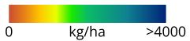

Fire scars (pastoral land)
Jul 1-Jul 23 2025
Jan-Jun 2025
Jul-Dec 2024
Jan-Jun 2024
Bores
Pastoral Properties
District Boundaries
Land Types
Expand
Alluvial floodplains
Basalt hills
Basalt plains & rises
Clay plains
Coastal dunes
Coastal floodplains
Desert dunefields
Desert sandplains
Elevated plateaux surfaces
Granite hills
Granite plains & rises
Granite ranges
Lateritic plains & rises
Lateritic plateaux
Limestone hills
Limestone plains & rises
Rugged sandstone plateaux
Salt pans
Sandstone hills
Sandstone plains & rises
Sandstone ranges
Tidal flats
TSDM July 1st 2025

District Summary
Zoom to